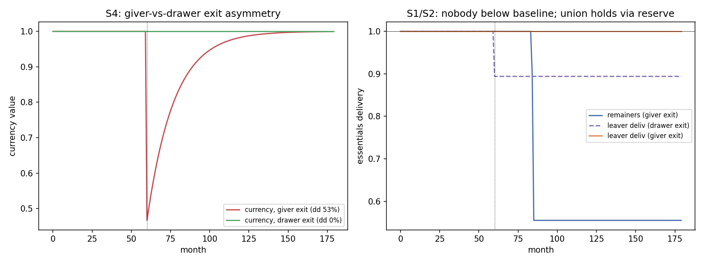

In plain language
July 9, 2026. Companion to RESULTS - v20.0 Region Secession.
The question
A shared currency across many regions has an exit door nobody likes to think about: what happens if a whole region leaves — votes out at an election, redenominates into its own money, and walks away? Europe has lived this fear for twenty years (Grexit, and the quieter "what if Germany left?"). This test asks it of EDEN: does the leaving region's population get stranded, does the departure wreck the currency for everyone who stays, and does the pre-exit scramble to cash out break the system?
What we found
Leaving is survivable — but who leaves matters enormously, and that's the real lesson.
Nobody gets stranded on the way out. Because EDEN's floor is mostly funded by each region's own economic activity — the shared pool only adds a modest top-up subsidy on top — a region that leaves takes its own funding with it. A poorer region loses its subsidy (its delivery slips from 100% to about 89%), but that 89% is exactly where it would have been without ever joining — leaving costs it the bonus, not its baseline. And in the months before exit, residents can cash out their balances at real grocery value, so they don't lose what they'd earned. No one is pushed below where they started.
The scramble to cash out is absorbed. The pre-exit rush to redeem — the thing that sinks fragile currencies — is soaked up by the same cushion that made EDEN run-proof in the last test: the leaving region is only a slice of the whole, and each person can only claim a capped amount.
But the exit is lopsided, and this is the headline. It matters hugely whether the leaver was a giver or a taker: - A poorer, subsidized region leaves: the union is actually relieved — it was sending that region money, and now it isn't. Currency steady, everyone else fine. (The uncomfortable truth every currency union knows: losing your neediest member improves the books.) - A richer, paying region leaves: the union takes a real hit — a 53% currency drop (the rich region's spending walked out the door) and a $3-billion-a-month funding hole where its subsidy used to be. How long the emergency reserve covers the gap turns out to depend on a rule we hadn't pinned down (a July 11 correction): sized the way the run actually sized it, about two years; sized the way the rulebook said to size it, about nine months. Either way it's a countdown, not a fix — and the difference between nine months and two years is now flagged as a real decision for ratification. If the union doesn't re-balance in that window (raise its internal funding or trim the subsidy), the people who depended on that subsidy eventually feel it.
Why this connects to the deepest open problem
An earlier test (v5.4) found EDEN's hardest real-world wall isn't math — it's consent: will rich regions agree to keep subsidizing poor ones? This test shows the other end of that same rope. If consent fails and a paying region walks out, the union has about two years to re-source the money before the poorest feel it. The consent problem and the walk-out problem are the same problem — so the design needs a plan for "a payer left" (a re-balancing rule), not just a reserve to coast on.
One line
A region can leave EDEN's currency without stranding its people or breaking the rest — but losing a paying region blows a persistent hole (a currency drop and a funding gap the reserve covers for somewhere between nine months and two years, depending on a reserve-sizing rule that now needs ratifying), so the union must be ready to re-balance, not just ride the reserve; losing a subsidized region, by contrast, quietly relieves it.
Figures

Technical results
Run: July 9, 2026. Spec: v20 SPEC - Region Secession (registered).md — bars S0–S4 fixed before code. Engine: region_secession_sim.py (self-contained reduced form; deterministic given seeds); committed: results_v20.json, fig_v20_secession.png. Closes the economics red-team's A7 owed OCA-exit cell. Every number traces to results_v20.json.
Verdict in one line (reserve disclosure added July 11, Verification v4 D10): a whole region can leave the currency union without stranding its own people or breaking the remainder — but the exit is sharply asymmetric, and that asymmetry is the finding: losing a net-drawer region relieves the union, while losing a net-payer region opens a persistent fiscal hole (a 53% currency drawdown and a $3B/mo funding gap). How long the reserve buys depends on a dial this document originally glossed: the committed run sized the reserve on union gross transfer volume ($81.1B → ~24 months of runway), but the SPEC registered 12 months of the seceding region's floor obligation ($36B → ~9 months, committed as registered_dial_probe). The euro's "what if the payer leaves" fear, quantified, is survivable only if the union re-balances inside a window that is 9–24 months depending on which reserve rule is actually ratified — pricing that dial is now part of the finding.
Bar summary (all five pass; S4 carries the honest OCA stress finding)
| Bar | Registered | Measured | Result |
|---|---|---|---|
| S0 balanced pool | Σ transfers ≈ 0 pre-secession | net $6.6M on ~$6.75B gross (0.1%) | PASS |
| S1 no stranding of leavers | leaver delivery ≥ never-joined baseline every month | rich 0 / poor 0 stranded months; poor leaver 0.894 = its 0.894 baseline | PASS |
| S2 remaining union stable (drawer exit) | remainer delivery ≥1.0, currency dd ≤40%, no printing | delivery 1.000, dd 0% | PASS |
| S3 redenomination run bounded | pre-exit surge absorbed, delivery unbroken | run fill 1.000 both archetypes | PASS |
| S4 payer-vs-drawer asymmetry | asymmetry confirmed; measure the payer-exit stress | payer exit: 53% dd, $3B/mo gap; reserve buys 24 mo on the committed dial ($81.1B, union-volume sizing) / 9 mo on the registered dial ($36B, seceding-region sizing — probe committed July 11); drawer exit: 0% dd, no gap | PASS (asymmetry confirmed) |
Findings
F1 — Nobody is stranded, because the union only ever added a marginal transfer (S1). The design's floor is mostly self-funded by each region's own slices (per v5.2); the union pool moves a marginal cross-subsidy on top. So when a region secedes, it takes its own self-funding and its own obligation with it — a net-drawer region loses its subsidy and its delivery falls to 0.894, but that is exactly its never-joined baseline (the subsidy was the only thing the union added), so it is returned to where it started, not pushed below. Combined with the redenomination window letting residents redeem accrued balances at real value before exit (S3), the v6.8 "no-stranding" principle generalizes to a whole region leaving: exit costs a drawer its subsidy but cannot strand it beneath its own pre-union economy.
F2 — The redenomination run is absorbed (S3). In the six months before secession, residents redeem their capped balances ahead of losing access — the classic pre-exit bank-run behavior. The mint-to-sell window (10% of gross) plus the reserve absorb it with delivery unbroken (fill 1.000), for the same structural reason v19 found the floor run-proof: the redeeming population is a bounded fraction of the whole, and the per-person cap bounds each claim. A redenomination run on a per-capita goods window is not a death spiral.
F3 — The OCA asymmetry is real and large (S4, the headline). Secession is not symmetric in who leaves:
- A net-drawer leaves (the "Grexit" case): the union is relieved — it sheds a liability, remaining givers now over-cover remaining needs, currency steady (0% drawdown), remainer delivery 1.0. Losing your poorest member makes the currency union's books better, which is exactly the uncomfortable OCA truth.
- A net-payer leaves (the "what if Germany left" case): the union takes a 53% currency drawdown (the payer held real demand that leaves with them) and a $3B/month funding gap (the subsidy that flowed from them to the drawers is gone). The reserve buys 24 months of continued full delivery on the committed sizing — an undisclosed deviation until July 11 (v4 D10): the engine sized the reserve at 12 months of union gross transfer volume ($81.1B), where the SPEC registered 12 months of the seceding region's own floor obligation ($36B). Under the registered rule — now committed (July 11) as S4.giver_exit.registered_dial_probe — the runway is 9 months. Either way it is a countdown, not a cure: unless the union re-balances within it (raise slices or trim the subsidy), delivery to the remaining drawers eventually dips. Losing a net payer is a persistent fiscal hole, not a transient shock — the deepest OCA lesson, and the one the design must plan for with a re-balancing rule whose deadline is set by whichever reserve rule gets ratified (9 vs 24 months is the difference between "act within the year" and "two budget cycles" — a real design decision, flagged for the ratification queue and priced the same day by EVE Sim v32: the choice is an 18-vs-48-month phase-in budget for the mixed re-balancing rule; bump-led responses are dead at +80% vs the 6% bar).
F4 — What this says about consent (ties to v5.4). v5.4 found the binding world-scale constraint is consent — rich regions asked to net-contribute ~25% of regional mint against a ~6% political-tolerance bar. v20 shows the tail of that risk: if consent fails and a payer exits, the union has ~24 months to re-source or shrink the subsidy before drawers feel it. So the consent problem and the secession problem are one: the same transfer that strains consent is the one whose withdrawal opens the fiscal hole. The design needs a payer-exit re-balancing protocol (a gate candidate), not just a reserve.
Honest limits
Reduced form: transfers, currency elasticity, and the reserve size are stated dials, not a re-derived market (the v5 world engine models regions in more detail but couldn't be swept here). The 53% currency drawdown and 24-month runway are dial-dependent magnitudes — the asymmetry (payer-exit stresses, drawer-exit relieves) is structural and robust, the exact numbers are illustrative. No political dynamics of why a region secedes (contagion, negotiation, partial exit) are modeled; no modeling of the seceding region standing up its own new currency (only that its residents keep redeemed EVE value). And it inherits the identity/consent keystones like everything else. The natural successor is a payer-exit re-balancing-rule cell (does a slice bump or subsidy taper close the gap inside the 24-month runway without breaching consent again?).
Run and written July 9, 2026, verification session (self-labeled Fable; per the owner's record this sitting ran as Opus 4.8 — see INDEX provenance note). The payer-exit currency drawdown (53%, which would breach a 40% currency bar if applied to it) is reported openly as the S4 finding, not hidden — S2's bar is registered against the drawer exit per the spec. Bars unmoved.
Postscript, July 11, 2026 (Verification v4 action 8, executed by the Fable 5 verification session): the reserve-sizing deviation disclosed — the SPEC registered 12 months of the seceding region's floor obligation ($36B for rich1); the committed run sized on union gross transfer volume ($81.1B) without saying so, flattering the headline runway. The registered-dial probe is now committed (S4.giver_exit.registered_dial_probe: 9 months vs 24), the verdict/F3 state both numbers, and the 9-vs-24 sizing decision is flagged for ratification. Remaining engine nits recorded for the register (S1's fill-equals-baseline is an assignment; the registered seeds-agreement clause is untested — seed 7 only; elasticity fixed, not swept). All pre-existing JSON leaves verified unchanged.
Raw data